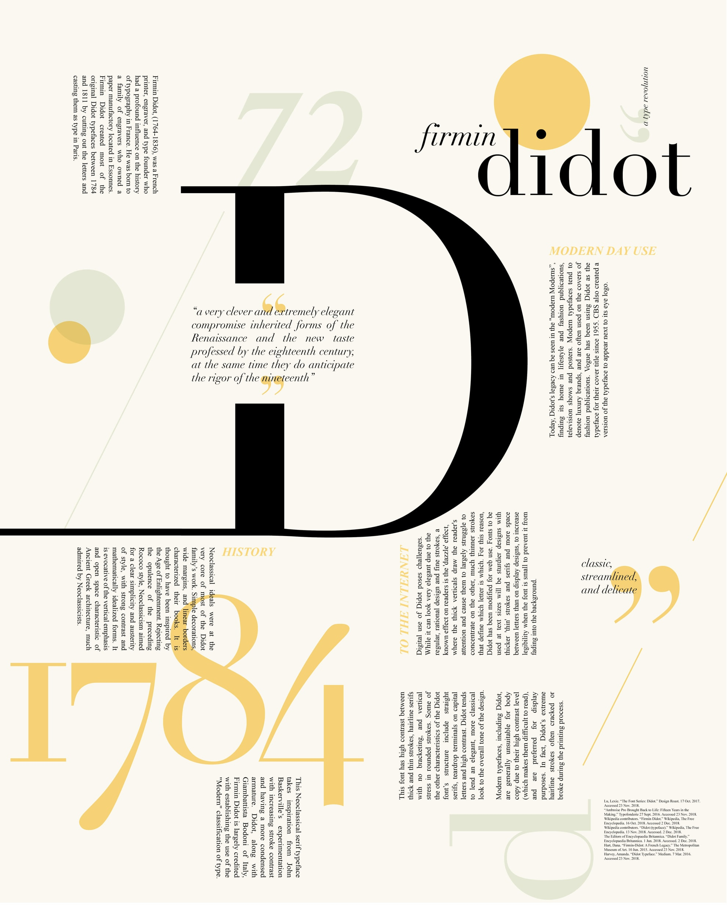
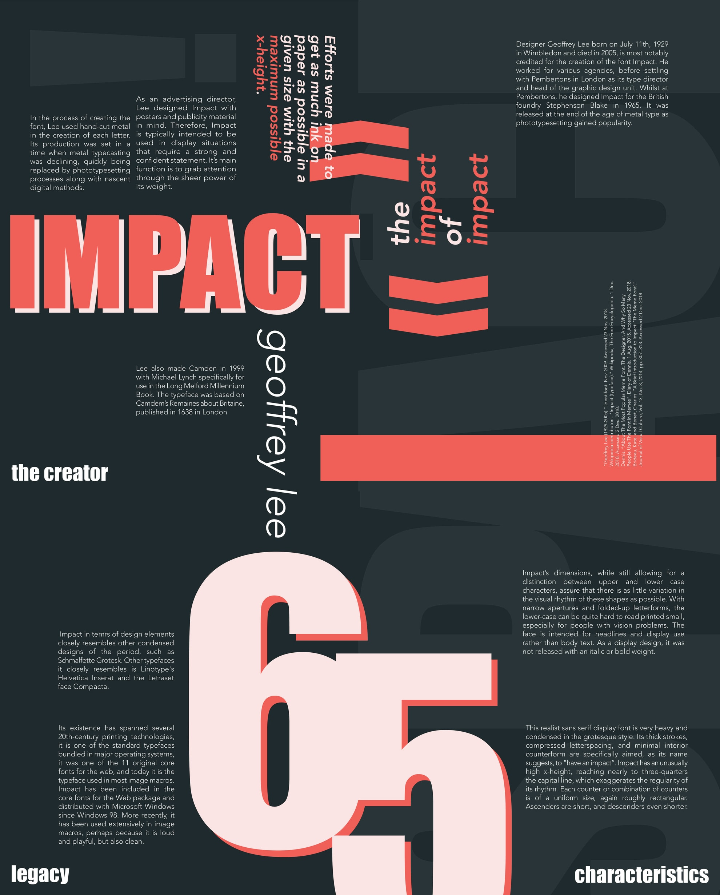

Extras
Graphic Design — Typography Zine
A one-page typography study in two classic font faces, Didot and Impact. Print it out and fold it into a portable zine!


Coin Pouch Mod — Don't Starve Together
Developed a content mod for the game Don't Starve Together with over 740 subscribers, which adds a new item to improve inventory management. Designed and created original art assets for the mod. Programmed the mod in Lua with several adjustable settings.
The mod is distributed through the Steam Workshop and maintained with game updates. You can check it out here!